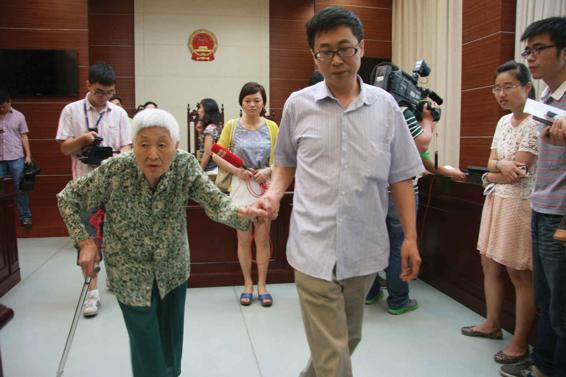

How Will Nations of the World Cope with Global Aging?
A “gray tsunami” is sweeping the world today. According to the United Nations, in 1950, there were 129 million persons age 65 and older on the planet, or 5 percent of the world population; by 2018, this number had jumped to 673 million—8.87 percent of the world population (World Bank, 2019d). The United Nations projects that the older population will more than double by 2050 to 1.5 billion, comprising nearly 16 percent of the global population (UN DESA, 2017). The world’s average life expectancy grew from age 47 in 1950 to age 72 in 2016 and will reach age 77 by 2050 (He, Goodkind, and Kowal, 2016; World Health Organization, 2016).
The extent to which nations are “graying” varies widely. Older adults made up 18 percent of the population in more developed countries in 2015; this proportion is projected to reach 27 percent by 2050 (UN DESA, 2017). The percentage of people age 65 and older in less developed nations is considerably lower due to three important factors that suppress life expectancy: poverty, disease, and malnutrition. In 1950, less than 4 percent of the population in less developed countries was age 65+. As of 2018, that proportion had risen slightly to 4 percent and is projected to reach 14 percent by mid-century (UN DESA, 2017; World Bank, 2019d).
Global aging, such as the graying of the U.S. population, is largely a women’s issue worldwide. In 2017, for every 100 women age 65 and older, there were 80 men, and only 54 men for every 100 women age 80 and over. These patterns are due primarily to women’s life expectancy advantage in most nations of the world. The Central Intelligence Agency (2013) has identified just 12 nations where older men outnumber older women: These generally are places that have higher maternal mortality rates, lower levels of schooling among women, and higher levels of gender oppression.
Just as population composition varies starkly worldwide, the experiences of older adults in less developed nations differ tremendously from those of their peers in wealthier nations. Retirement is “an unaffordable luxury” for most older adults in Africa, and many in Latin America and parts of Asia (Bremner et al., 2010). Four out of five older adults worldwide receive no retirement income from pensions or government entitlement programs. Many must continue to work or rely on their families for financial support. Some work in the informal economy, such as selling products in street markets or working on farms with no benefits or health protection.
Although children and grandchildren historically have cared for their aging parents and grandparents, this support is eroding in some parts of the world. For example, in many parts of Africa, young people are moving to urban areas to work, while others are dying prematurely due to HIV/AIDS, and others still are grappling with their own poverty and cannot support their parents. As a result, many older adults are left to take care of themselves. These challenges are compounded by the fact that many frail older adults unexpectedly find themselves as caretakers to their grandchildren, when their own children (that is, the grandchildren’s parents) have died due to ravages such as the AIDS epidemic (Bremner et al., 2010).
Worldwide, the “gray tsunami” (O’Neill, 2009) has enormous implications for social policy. As we learned earlier, when a large share of the population enters into older age, there are fewer working-age people to support them. In 1950, there were 10 working-age persons for every person age 65 and older worldwide. That number will drop steeply between 2015 and 2050, from 7 to less than 4. By 2050, demographers predict that there will be just 2 working-age adults per older adult in more developed nations, 4 in less developed nations, and 8 in the least-developed nations (UN DESA, 2017).
With fewer people working and paying into the system and more taking out, policy makers are concerned about the solvency of social programs. Countries vary widely in what they are doing to cope with their growing numbers of older people. More than 150 nations currently provide public assistance for people who are older or disabled, or for their survivors when they die. As we have seen already, the United States relies primarily on Social Security and Medicare to serve the financial and health needs of the older adults. Other industrial nations provide a much broader array of services.
In Japan, one of the oldest nations in the world, 23 percent of men and 29 percent of women are now 65 and older (UN DESA, 2017). Many older adults remain active well into old age because the Japanese culture encourages this activity and because business policies often support post-retirement work with the same company one worked for before retirement. A number of national laws in Japan support the employment and training of older workers, and private businesses also support retraining (Statistics Bureau Japan, 2015).
Societies that have large extended families and practice ancestor worship historically have been more likely to treasure their elders, honoring them at public events and seeking their counsel in political matters. East Asian nations, in particular, have a tradition of following the Confucian teaching of filial piety. Children care for their parents in old age out of gratitude for the care they received when young (Sung, 2000). As a result, parents historically have lived with, and are cared for by, their children when they are no longer able to care for themselves (Cowgill, 1968; Falk, Falk, and Tomashevich, 1981).
In China, the constitution stipulates that “children who have come of age have the duty to support and assist their parents.” In a recent case, a judge ordered a woman to visit her mother (pictured) at least once every two months.
This pattern of parent-child co-residence in Asia is starting to fade, however, due to economic development and globalization. Economic development in wealthier Asian nations now enables older adults to live on their own, if they choose to do so. For example, improvements in the health and financial status of older persons now enable Japanese older adults to maintain their own homes and the desirable status of “intimacy at a distance” (Kumagai, 2010).
Globalization also has altered the treatment and status of the aged population throughout the world (Cowgill, 1986; Foner, 1984; Fry, 1980; Holmes, 1983). As previously agrarian societies become part of the emerging global economy, traditional ways of thinking and behaving are likely to change. For example, adult children in China are now abandoning their rural villages to seek jobs in urban regions. Yet these moves often mean leaving behind their aging parents, who are responsible for supporting themselves, often by working in arduous agricultural jobs. Although economic conditions require that children move, cultural beliefs still condemn such moves. In one high-visibility case from 2006, a 60-year-old Chinese widow successfully sued her son and daughter for abandonment. The courts ruled that she was allowed to live with her daughter and obliged her son to pay her monthly support (French, 2006).
The combination of graying and globalization will shape the lives of older people throughout the world well into this century. Traditional patterns of family care will be challenged as family-based economies continue to give way to labor on the farms and in the offices and factories of global businesses. Like the industrial nations earlier in the twentieth century, all societies will be challenged to find roles for their aging citizens. This challenge will include identifying new means of economic support, often financed by government programs. It will also entail identifying ways to incorporate rather than isolate older persons, by drawing on their considerable reserves of experience and talent.
CONCEPT CHECKS
What is generational equity?
Describe the debate surrounding the future of Social Security and Medicare programs in the United States.
What is the feminization of global aging?
What are the implications of the graying world population for social policy?